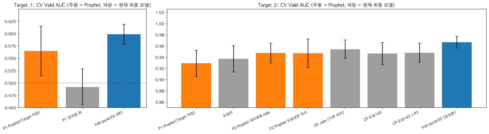
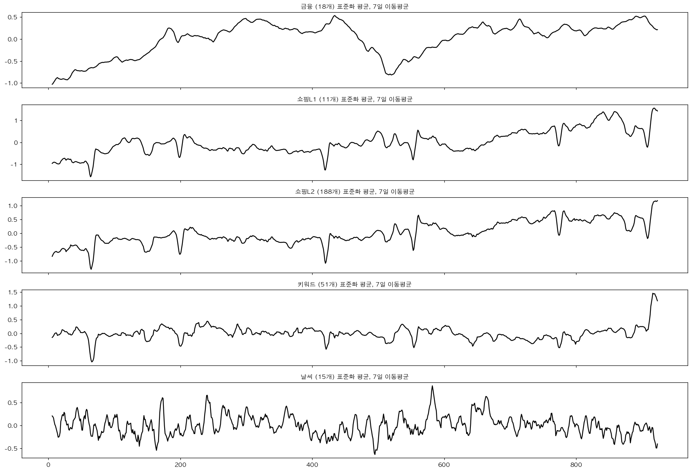
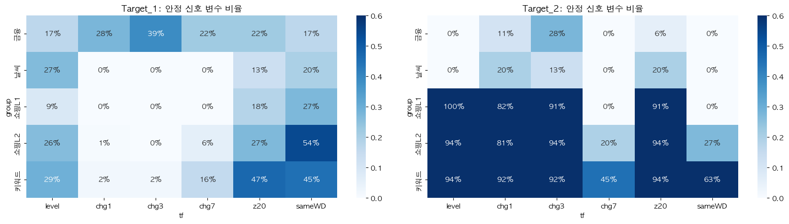
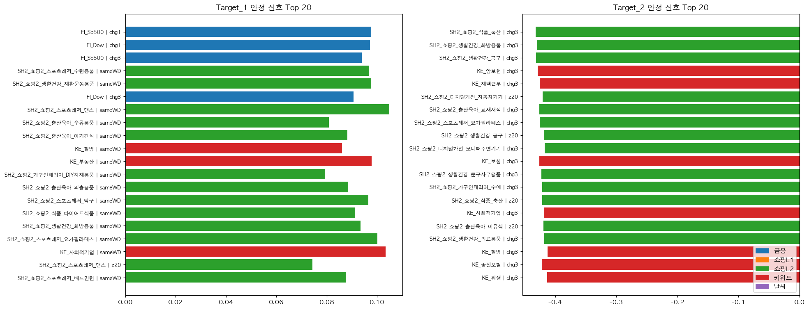
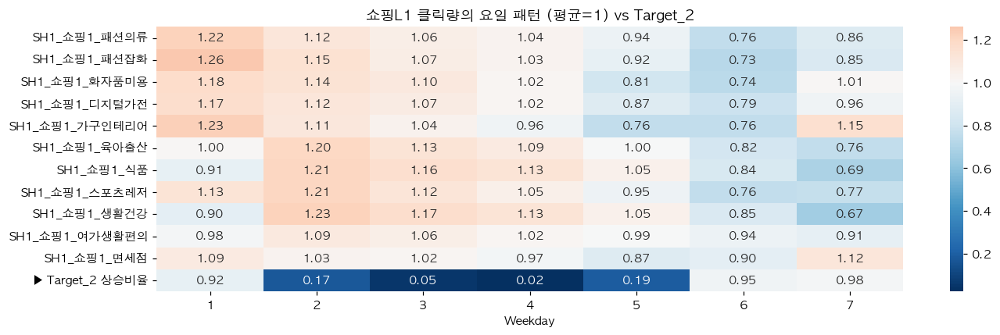
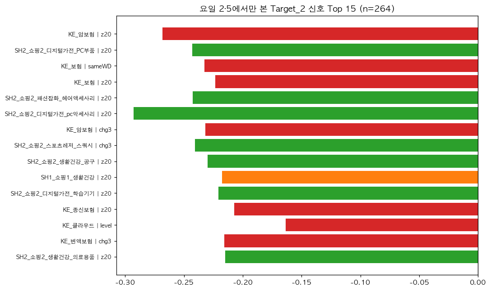
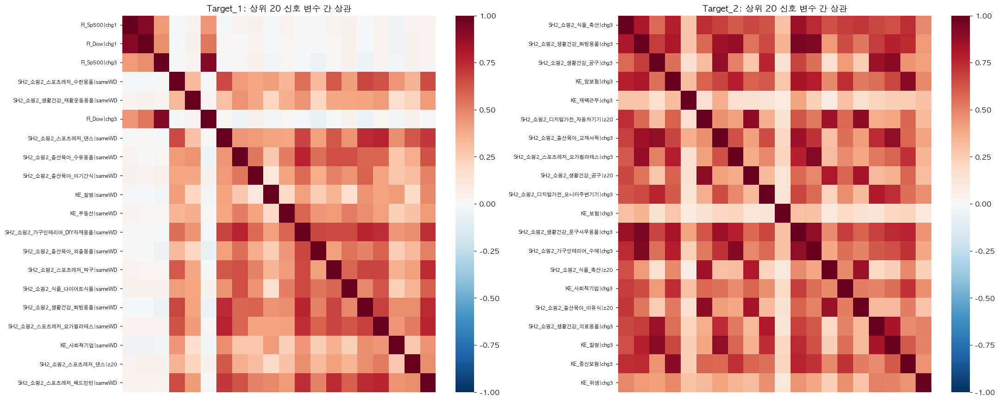

미니프로젝트 현황판
기준 2026-10-13 10:53 · 근거 experiments.csv(10:46) · train.ipynb(10:47) · 01_EDA(10:51)
Target_2는 요일 주기 문제라 0.967로 거의 천장이다. Target_1은 신호가 약하고 국면이 바뀌는 문제라, 미국 증시 전일 변화를 주말까지 살린 단순한 모델(E8, 0.603)로 정리했다. 최종 제출은 T1 = E8, T2 = E5, CV 평균 0.785다.
고도화 과정 한눈에: 무엇을 생각했고 어떻게 판단했나
점선 = 두 Target 평균 CV AUC. 0.734(원본 Baseline)에서 0.785(최종)까지 오는 동안 가장 크게 오른 곳은 모델 교체가 아니라 ③ 피처 설계였다.
| 단계 | 그때 든 생각 (질문) | 한 일 | 결과 | 판단 |
|---|---|---|---|---|
| 0 문제 정의 | 무엇으로 채점되나? | D+3 상승 확률, AUC, Private 200일 = 60점 확인 | – | Public이 아니라 처음 보는 미래 200일에서 버티는 모델이 목표 |
| 1 Baseline | 원본은 얼마나 하나? | E0: 변수 565개 + RF 그대로 | T1 0.522 (Train 1.00) T2 0.945 | T1은 거의 다 외우고 찍는 수준. 출발점 확보 |
| 2 검증 설계 | 무엇을 믿고 고를까? | 시계열 5-fold CV, gap=3, 선택 기준 = 평균−std | – | 시장 국면이 바뀌므로 과거로 배우고 미래로 채점한다. D+3이 겹치지 않게 3일을 비운다. 운 좋은 모델 대신 꾸준한 모델을 고른다 |
| 3 EDA | 두 Target은 같은 문제인가? | Target 구조, 변수군×변환 AUC, 앞/뒤 절반 안정성 | T2 요일만 0.926 T1 앞뒤 상관 0.39 | T2 = 요일 리듬 문제, T1 = 잡음 + 국면 변화 문제. 따라서 Target별로 따로 설계한다 |
| 4 E1 정규화 | 모델만 둔하게 하면 될까? | 같은 565개 변수, 얕은 트리 | T1 0.540 (+0.018) | 조금 낫지만 부족하다. 문제는 모델이 아니라 입력에 있다 |
| 5 E2 피처 설계 | EDA 결론을 피처로 만들면? | T1: 금융 변화율 + 소비 분위기 3개 + 요일 (82개) T2: 요일 + d3ratio + 키워드 z20 (69개) | T1 0.597 (+0.057) T2 0.957 | 가장 큰 도약. 변수를 줄이고 의미 있는 형태로 바꾸는 게 핵심이었다 |
| 6 E3 자동 선택 | 사람 대신 알고리즘이 고르면? | fold 안에서 상위 30개 선택 | T1 0.585 · T2 0.930 | 둘 다 하락. 잡음 속에서 자동 선택은 우연을 고른다 → 사람 설계 유지 |
| 7 E4·E5 모델 비교 | 어떤 모델이 맞나? | 로지스틱, XGB, 3종 앙상블 | T2 앙상블 0.967 T1은 모두 0.56~0.58 | T2는 앙상블이 가장 안정적이다. T1은 복잡한 모델일수록 흔들린다 |
| 8 E6 그리드 | T1 설정을 더 조이면? | RF 깊이·잎 크기, LR 강도, 금융 축소 | T1 0.599, 격차 0.30→0.23 | 점수는 그대로다 → 하이퍼파라미터는 병목이 아니다. 같은 점수라면 더 단순한 모델(깊이 2)을 고른다 |
| 9 블록 제거 | 넣은 블록이 정말 일하나? | 하나씩 빼고 fold별 비교 (4/5 fold 하락 + 하락폭 ≥ std/2) | samewd·d3ratio 유지 z20 경계 | 근거가 있는 블록만 남았는지 확인했다 |
| 10 요일의 정체 | Weekday 1~7은 무슨 요일? | 요일별 "금융 값이 전일과 같은 비율" | 1=일, 7=토 | 새 문제 발견: 주말엔 미국 지수 변화율이 항상 0이라 T1 핵심 신호가 7일 중 2일 꺼져 있었다 |
| 11 E8 / E7 | 그 구멍을 메우면? 중복을 줄이면? | E8: 마지막 실제 변동일의 변화율로 채움 E7: 금융 중복 변수 정리 | E8 0.603 ± 0.018 E7 0.597 ± 0.048 | E8은 평균·흔들림·격차 모두 개선되고 이유도 분명 → 채택. E7은 흔들림 2배 → 기각 |
| 12 Prophet | 시계열 전용 모델은? | 날짜만 보는 Prophet, 같은 CV | T1 0.565 (1년 주기 끄면 0.49) T2 0.947 | 예측은 현재 모델보다 못하다. 그 대신 변수군 성분 분해로 설명 근거를 얻었다 |
| 최종 | 무엇을 낼까? | T1 = E8, T2 = E5 | 평균 0.785 Private 기대 ≈0.77 | "점수가 같으면 단순하고 이유가 있는 쪽" |
전 과정을 관통한 판단 원칙 4가지
Private은 처음 보는 기간이다. fold마다 들쭉날쭉한 모델은 운에 맡기는 셈이라, 평균−std로 골랐다.
+0.004 같은 작은 차이는 잡음과 구별되지 않는다. "왜 좋아졌는지" 말할 수 있을 때만 채택했다(E8 채택, E7 기각).
깊이 2 RF, 블록 단위 피처처럼 덜 외우는 쪽을 골랐다. 단순한 모델이 새로운 기간에서 덜 무너진다.
Target lag 1·2(창 겹침), 미래 값 shift, Test로 학습하기를 모두 막았다. CV 점수가 진짜 실력이 되게 하는 전제다.
요일 리듬(평일에 쇼핑이 많음)을 d3ratio로 직접 계산 → 0.945에서 0.967.
미국 증시 전일 변화 + 소비 분위기만 남기고 둔한 모델로 → 0.522에서 0.603. 남은 건 운의 영역이다.
발표용: 변수 관계 → 피처 → 모델 설정
관계를 밝힌 방법은 모든 변수에 똑같이 적용했다. ① 변수 하나로 AUC 측정 ② 6가지 형태로 바꿔 다시 측정 ③ Train 앞·뒤 절반에서 같은 방향인지 확인 ④ 같은 요일끼리만 다시 측정(요일 효과 제거) ⑤ 최종적으로 시계열 CV에서 블록을 빼 보고 점수가 떨어지는지 확인.
| 변수 | 밝힌 관계 (근거 수치) | 피처로 만든 방법 | 쓰는 곳 |
|---|---|---|---|
| 미국 지수 FI_Sp500·Dow·Nasdaq | 전일 변화율이 오르면 3일 뒤 KOSPI도 오른다. AUC 0.598, 같은 요일끼리 보면 0.62로 더 강하다. 하루만 밀어도 신호가 사라진다(그림 8) | fi_chg 1·3·5일 변화율 + us_last(주말 0을 직전 거래일 변화율로 채움 → 일·토 AUC 0.50 → 0.57·0.60) | T1 |
| 그 외 금융 유가·금리·환율·원자재 | 원값은 추세가 커서(자기상관 0.99) 시기를 외우게 한다. 변화율로 바꾸면 약한 신호가 남는다 | fi_chg: 18개 × (1·3·5일 변화율 + 20일 변동성) = 72개 | T1 |
| 쇼핑·키워드 (T1 쪽) | 요일 효과를 뺀 "평소 같은 요일보다 많은가"가 KOSPI와 약하게 같은 방향이다(+0.08~0.10). 서로 비슷하게 움직인다(그림 9) | samewd_grp: 군별(쇼핑L1·L2·키워드) 같은 요일 대비 비율의 중앙값 3개로 압축. 빼면 0.599 → 0.584 | T1 |
| 쇼핑L1 식품·생활건강 | 건강식품과 같은 주간 리듬이다. 월 1.21 ↔ 토 0.69. 7개 요일 모두 "3일 뒤 요일이 더 많은가"와 Target_2가 일치한다(그림 6) | d3ratio: 지난 4주 'D+3과 같은 요일' 평균 ÷ 오늘 (12개). 단독 AUC 0.954, 빼면 0.967 → 0.959 | T2 핵심 |
| 포털 키워드 (T2 쪽) | 요일로 결론이 안 나는 월·목에서, 보험 키워드가 평소보다 튀면 덜 오른다(−0.27) | z20_kw: 20일 평균 대비 위치 (50개). 기여 +0.002로 보조 역할 | T2 보조 |
| 요일 Weekday | T2 상승비율: 일·금·토 0.92~0.98, 화·수 0.02~0.05. T1과는 무관(0.484). 1=일·7=토는 금융 휴장 패턴으로 확인 | wd_onehot 7칸 (숫자 1~7로 넣으면 엉뚱한 순서가 생김) | T1·T2 |
| 날씨 | 안정 신호 비율 9~10%로 우연 수준(4%)과 큰 차이가 없다. Prophet 분해에서 잔차가 88%다 | 사용 안 함 | – |
| 사용 금지 | Target의 어제·그제 값(자기상관 0.47)은 3일 창이 겹쳐 생긴 착시이고, 예측 시점엔 알 수 없다 | Leakage라 제외 | – |
최종 모델 설정
T1 · E8_t1_us_last
결측 중앙값 대체 → RandomForest
n_estimators=300, max_depth=2, min_samples_leaf=20, max_features='sqrt'
피처 85개 = fi_chg 72 + samewd_grp 3 + wd 7 + us_last 3
왜: 신호가 약해 깊은 트리는 잡음을 외운다. 깊이 2는 "질문 두 번만 하는 나무" 300그루의 투표다. 잎마다 최소 20일이 있어야 규칙을 만들 수 있다. 결과: Train 0.815, Valid 0.603, 격차 0.21(Baseline은 0.48).
T2 · E5_ensemble (soft voting)
① 로지스틱: 표준화 → L2, C=0.1
② RF: 300그루, max_depth=4, leaf=20, sqrt
③ XGB: 300회, max_depth=2, learning_rate=0.03, subsample=0.8, colsample=0.5, min_child_weight=10, reg_lambda=5
→ 세 확률의 평균
피처 69개 = wd 7 + d3ratio 12 + z20_kw 50
왜: 신호가 뚜렷해 어떤 모델도 0.95 이상이다. 성격이 다른 세 모델을 평균하면 fold 간 흔들림이 줄어든다. 결과: Valid 0.967 ± 0.010, 격차 0.02.
공통: 모든 피처는 과거 값만 사용한다. 결측 대체·표준화는 Pipeline 안에서 각 fold의 Train으로만 학습한다. 최종 제출 모델은 Train 924일 전체로 다시 학습한다.
쉬운 말로: 지금 무엇을 하고 있나
매일 "3일 뒤 KOSPI가 오를까?(Target_1)", "3일 뒤 건강식품 쇼핑 클릭 지수가 오를까?(Target_2)"를 0~1 확률로 낸다. 채점은 AUC로 한다. 0.5는 동전 던지기, 1.0은 완벽하다.
변수 하나를 "점수"로 보고 오른 날과 안 오른 날을 얼마나 잘 가르는지 AUC로 잰다. 0.5에서 멀수록 쓸모 있다. 0.5보다 작아도 반대 방향으로 쓸모 있다. 그리고 앞 절반 기간과 뒤 절반 기간에서 같은 방향인지 확인한다. 한 시기에만 맞는 관계는 우연일 가능성이 크다.
쓸모 있어 보이는 변수 수십 개를 모아 확률을 내는 규칙을 만든다(랜덤포레스트·로지스틱·XGBoost). 과거로 배우고 미래로 시험하는 시계열 CV로 채점해서, 실제 제출(미래 기간)과 같은 조건을 흉내 낸다.
모델이 학습 데이터의 우연한 무늬까지 외우지 못하게 일부러 둔하게 만드는 장치다. 트리 깊이 제한(max_depth), 잎당 최소 20일(min_samples_leaf), 로지스틱의 C를 작게, XGBoost의 reg_lambda가 모두 이 역할을 한다.
이름은 비슷하지만 다른 것이다. 변수들의 단위를 맞추는 전처리다. 이 데이터는 설명서상 이미 처리된 값이고, 실제로 열마다 최소 0·최대 약 1인 0~1 범위다. 로지스틱 앞의 StandardScaler는 단위를 맞출 뿐이고 과적합과는 관계없다.
학습 때 점수와 처음 보는 기간의 점수 차이다. 격차가 클수록 "외운 것"이 많다. T1은 Baseline이 1.00 대 0.52였고, 정규화 후 0.83 대 0.60이다.
비유: 기출문제 924개로 공부하는 학생이다. T2는 "요일만 보면 답이 보이는" 문제라 쉽다. T1은 정답에 운이 많이 섞인 문제라, 기출 답을 통째로 외우면(과적합) 실전에서 망한다. 정규화는 "외우지 말고 큰 원리만 잡아라"라는 규칙이고, 시계열 CV는 "지난 시험으로 공부하고 다음 시험으로 채점하는 모의고사"다.
정정: 이전 설명에서 틀린 부분
이전 답변에서 "Target_2는 원변수(건강식품 지수)로 계산되니 3일 이상 지난 과거 Target을 피처로 쓸 수 있다"고 했는데, 틀렸다.
설명서는 원변수를 FI_KOSPI, SH2_쇼핑2_식품_건강식품으로 적고 있지만, 이 두 열은 train.csv에 없다(287열 확인). Test에도 Target이 없으므로 과거 Target은 피처로 만들 수 없다.
그래서 실제로는 같은 요일 패턴을 가진 대리 변수(쇼핑L1 식품·생활건강)로 d3ratio를 만들었다. 이것이 현재 방식이고, 올바른 방식이다.
지금 어디쯤인가
검증 설계
완료시계열 5-fold CV, gap=3
EDA 피처인사이트
완료VSCode에서 다시 실행 중 (§3 계산까지)
피처·모델 실험
E0~E5T1 0.597 · T2 0.967
T1 안정화
E6 완료격차 0.30→0.23, 평균 +0.002. 병목 아님
지키며 제출
지금 여기Public 2차, 분산 줄이기, T2 요일 2·5
Private·보고서
대기14:00 Private 1회, 14:50 보고서·코드
누가 무엇을 하고 있나
터미널 (Claude, 이 현황판)
그림 해석, 단계 판단, 현황판 갱신. 코드 파일은 건드리지 않는다.
VSCode 세션
train.ipynb 수정·실행, 01_EDA 재실행. 실험 결과는 experiments.csv에 쌓인다.
판단 기준
수치는 experiments.csv만 믿는다. 노트북 화면 출력과 다르면 csv가 기준이다.
현재 자동 선택 (평균 − 표준편차 최대)
| Target | 선택 | Valid 평균 | std | 평균−std |
|---|---|---|---|---|
| Target_1 | E8_t1_us_last | 0.6033 | 0.0180 | 0.5853 |
| Target_2 | E5_ensemble | 0.9665 | 0.0105 | 0.9560 |
예상 평균 AUC ≈ 0.785. 평균−std 기준 2위와의 차이: T1은 E6 대비 +0.007, T2는 E4_lr 대비 +0.005로 둘 다 잡음 수준이다.
최종 제출 추천 (experiments.csv 11:29 기준)
Target_1 → E8_t1_us_last
E6 + 미국 지수 주말 보정. 0.6033 ± 0.0180, 평균−std 0.5853, 격차 0.212
E6보다 평균·흔들림·격차 세 가지가 모두 낫다. 차이(+0.004)는 잡음 수준이지만 "주말에 꺼져 있던 미국 증시 신호를 살렸다"는 이유가 분명하다. 성능이 같다면 이유가 있는 쪽을 고른다.
Target_2 → E5_ensemble
LR+RF+XGB 소프트보팅. 0.9665 ± 0.0105, 평균−std 0.956, 격차 0.020
모든 후보 중 평균−std가 1위다. z20_kw를 빼도 0.964로 거의 같아 더 단순한 대안이 되지만, 4/5 fold에서 하락하니 유지한다.
| 예상 | T1 | T2 | 평균 |
|---|---|---|---|
| CV fold 평균 | 0.603 | 0.967 | 0.785 |
| Baseline 대비 | +0.081 | +0.021 | +0.051 |
| Private 현실 기대치 | ≈0.57~0.58 | ≈0.96 | ≈0.77 |
| Public 100일 정상 범위 | 0.50~0.70 | 0.93~0.99 |
Private 기대치는 fold 예측을 이어 붙여 한 번에 계산한 AUC(T1 0.579) 기준이다. T1은 운의 폭이 커서 ±0.06 정도는 정상이다.
fold별로 보면 (왼쪽 = 과거 → 오른쪽 = 최근)
T1: E8(주황)은 fold 5개 모두 0.57 이상이다. E7(금융 중복 정리)은 fold1에서 0.52로 떨어져 흔들림이 2배다 → 미채택. Baseline(회색)은 처음 fold에서 0.5 아래다.
T2: E5(파랑)와 z20을 뺀 버전(주황)은 거의 겹친다. LR 단독(노랑)은 fold 1·2·5에서 조금 앞서지만 fold3에서 0.947로 떨어져 흔들림이 크다. 세 후보 모두 0.95 이상이라 어느 것을 골라도 큰 차이는 없다.
제출 전 확인 3가지
1. train.ipynb §5 자동 선택이 T1=E8, T2=E5인지 확인한다. FINAL_OVERRIDE = {}는 그대로 둔다.
2. 커널(Python (llm))에 xgboost 3.2.0이 이제 설치돼 있다. 다만 노트북에 저장된 출력은 xgboost가 없던 때의 것("미설치 → 건너뜀")이다. Restart → Run All로 다시 실행해 출력과 csv를 맞춘 뒤 zip을 만든다.
3. Private은 MODE='private'로 바꿔 1회만 제출한다. 행 수 200, 컬럼은 sample과 같게, 확률은 0~1인지 셀 검증 결과를 확인한다.
실험별 점수와 과적합 격차
Target_1 · KOSPI
Target_2 · 건강식품
T1 읽는 법: 원본 Baseline(E0)은 Train 1.00, Valid 0.52로 거의 외우기만 했다. 피처를 82개로 줄인 E2에서 0.597로 올랐고, 이후 E3~E6는 모두 0.56~0.60에 머문다. 모델을 바꿔도 천장이 같다는 것은 남은 신호가 거의 없다는 뜻이다.
T2 읽는 법: 모든 실험이 0.93~0.97이고 격차도 0.01~0.03으로 작다. 차이는 std 한 칸 안이라 순위를 크게 믿을 필요는 없다.
최신 결과 해석 (11:25 기준)
| 확인한 것 | 수치 | 의미 |
|---|---|---|
| experiments.csv 새 행 | 없음 (E0~E6 그대로) | 요청한 E7·fold별 블록 제거 실험은 아직 csv에 기록되지 않았다. VSCode 세션은 scratch 탐색과 Prophet 노트북을 먼저 진행했다 |
| 환경 차이 VSCode 커널에 xgboost 없음 | E5 = LR+RF만 T1 0.579±0.053 T2 0.967±0.011 | Public 2차 파일(11:08)은 XGB가 빠진 앙상블로 만들어졌다. T2 점수는 같은 수준이라 손해는 없다. 다만 제출 코드와 보고서 수치가 같은 환경에서 재현돼야 하므로, 최종 전에 xgboost를 설치하거나 앙상블 구성을 하나로 고정해야 한다 |
| 최종 CV (노트북 §5-1) | Baseline 0.734 → 최종 0.783 | T1 E6 격차 0.48 → 0.23, T2 E5 격차 0.05 → 0.02. 둘 다 덜 외우고 더 맞힌다 |
| 이어 붙인 AUC (Private 방식) | T1 E6 0.570 (fold 평균 0.599) | Private은 200일을 한 번에 채점한다. fold마다 확률 수준이 달라 섞이면 손해를 본다. T1 실제 기대치는 0.57 근처로 잡는 게 안전하다 |
| 탐색: 주말 0 보정 (미국 지수 3개) | fold 평균 0.599→0.603 평균−std 0.579→0.585 이어 붙인 AUC 0.570→0.579 | 주말에는 미국 지수 변화율이 항상 0이라 핵심 신호가 7일 중 2일 꺼져 있었다. "마지막 실제 변동일의 변화율"로 채우면 세 지표가 모두 오른 유일한 개선이다. 폭은 작지만 이유가 분명하다 → E7 채택 권장 |
| 탐색: 효과 없음 | ±0.001 이하 | seed 5개 평균, 최근 300·450일만 학습, T2 d3ratio 확장(SH2·8주). T2는 한계에 도달했다 |
| Prophet: 요일 통제 AUC | T1 금융 0.098→0.122 T2 쇼핑·포털 0.43→0.25 | 요일 효과를 빼면 금융 신호는 오히려 커진다(진짜 정보). T2 쇼핑 신호는 절반 가까이 요일 효과였다 |
| Prophet 예측 CV | T2 0.947 < d3ratio 0.954 T1 0.565, 연계절 끄면 0.492 | T2는 d3ratio보다 못하다. T1의 0.565는 2.5년치 데이터에서 1년 주기를 우연히 잡은 것일 가능성이 커서 채택하지 않는다 |
Prophet vs Baseline vs 현재 모델
모두 같은 시계열 CV(5-fold, gap=3, 같은 분할)로 채점해 공정하게 비교할 수 있다. Prophet 수치는 02_Prophet_시계열분석.ipynb를 터미널에서 따로 실행해 다시 확인했다(노트북 기록과 같다).
| Target_1 모델 | 평균 | std | 평균−std |
|---|---|---|---|
| Prophet 연계절 끔 | 0.492 | 0.037 | 0.455 |
| Baseline E0 (RF, 565개) | 0.522 | 0.018 | 0.504 |
| Prophet P1 (Target 직접) | 0.565 | 0.050 | 0.515 |
| E4_lr 로지스틱 | 0.565 | 0.055 | 0.510 |
| E5 앙상블 | 0.583 | 0.045 | 0.538 |
| E2 RF (EDA 피처 82개) | 0.597 | 0.022 | 0.574 |
| E6 RF 깊이2 (현재 선택) | 0.599 | 0.020 | 0.579 |
| E7 후보 (주말 0 보정) | 0.603 | – | 0.585 |
| Target_2 모델 | 평균 | std | 평균−std |
|---|---|---|---|
| Prophet P1 (Target 직접) | 0.929 | 0.023 | 0.906 |
| 요일만 (요일별 상승비율) | 0.937 | 0.023 | 0.914 |
| Baseline E0 | 0.945 | 0.009 | 0.936 |
| Prophet P2 (대리변수 예측) | 0.947 | 0.018 | 0.930 |
| LR 요일+d3 (+P2) | 0.946 (0.948) | 0.020 | 0.926 |
| d3ratio 단독 | 0.954 | 0.016 | 0.938 |
| E4_lr 로지스틱 (69개) | 0.964 | 0.013 | 0.951 |
| E5 앙상블 (현재 선택) | 0.966 | 0.010 | 0.956 |
"설명력"을 여러 각도로 보면
| 관점 | 재는 법 | Prophet | Baseline E0 | 현재 (E6 / E5) |
|---|---|---|---|---|
| 맞히는 힘 | CV 평균 AUC | T1 0.565 · T2 0.947 | T1 0.522 · T2 0.945 | T1 0.599 · T2 0.966 |
| 시기 안정성 | fold 간 std (작을수록 좋음) | T1 0.050 · T2 0.018 | 0.018 · 0.009 | 0.020 · 0.010 |
| 외운 정도 | Train−Valid 격차 | 측정 안 함 (시간 함수라 외울 변수가 적다) | T1 0.48 · T2 0.05 | T1 0.23 · T2 0.02 |
| 보는 정보 | 입력 | 날짜만 (추세 + 요일 + 1년 주기) | 원변수 565개 | Target별로 고른 피처 82개 / 69개 |
| 해석 쉬움 | 사람에게 설명할 수 있나 | 가장 쉬움. 성분 분해 그림 한 장 | 어려움 (변수 565개) | 보통 (블록 단위로 설명 가능) |
| 점수의 출처 | 무엇을 끄면 무너지나 | T1: 1년 주기를 끄면 0.49 (우연 의심) T2: 요일 성분 | T1: 없음 (외우기) | T1: 미국 증시 전일 변화 T2: d3ratio (빼면 0.959) |

- 그림 P2 · Prophet §4
- 결과
- T1에서 Prophet은 0.565지만 오차 막대가 0.5 아래까지 내려간다. 연계절을 끄면 0.49가 된다. T2에서 Prophet은 0.929~0.947로 "요일만"(0.937) 근처이고, d3ratio(0.954)와 현재 E5(0.966)보다 낮다.
- 의미
- Prophet은 날짜만 보는 모델이다. T2에서는 요일 패턴을 스스로 배워 "요일만"과 같은 수준에 도달한다. T1에서는 날짜에 정보가 없어서, 2.5년 데이터에서 1년 주기를 우연히 잡은 만큼만 점수가 난다.
- 한 줄: Prophet은 Baseline보다 낫지만 현재 모델보다 못하고, T1 점수는 믿기 어렵다.
CV 성능 비교 (주황 = Prophet, 파랑 = 현재 최종)

- 그림 P1 · Prophet §2
- 무엇을 보나
- 각 군이 얼마만큼 추세·요일·1년 주기·나머지(잔차)로 설명되는지를 본다. 이것은 Target이 아니라 변수 자체의 설명력이다.
- 결과
- 금융은 추세 66%·요일 0%, 포털은 요일 54%(평일 +, 토·일 −), 쇼핑은 추세 약 41%·요일 18~29%(월~수 +, 금·토 −), 날씨는 잔차 88%다.
- 의미
- 쇼핑·포털은 요일 리듬이 크기 때문에 T2와 관련된다. 금융은 추세가 지배하고 요일 리듬이 없어서, 원값 대신 변화율로 넣어야 했다. 날씨는 대부분 설명이 안 되는 잡음이다.
- 한 줄: 앞서 EDA로 내린 군별 결론을 Prophet이 다른 방법으로 다시 확인해 주었다.
변수군을 추세·요일·1년 주기로 쪼개면
최우선 방향 (갱신됨)
- E7 = E6 + 미국 지수 주말 0 보정을 train.ipynb에 정식 실험으로 기록한다. 세 지표가 모두 오른 유일한 후보다.
- 환경 고정: VSCode 커널에 xgboost를 설치하거나, E5를 LR+RF로 확정해 csv와 노트북 수치를 맞춘다. 보고서와 zip은 이 환경 기준으로 재현돼야 한다.
- Public 2차 결과 확인 (파일은 11:08 생성): T1 0.50~0.70, T2 0.93~0.99 안이면 정상이다. Public에 맞춰 고치지 않는다.
- 종료: seed 평균, d3ratio 확장, Prophet은 효과가 없어 제외한다.
- 2일차: Train 전체로 재학습 → Private 1회 → 보고서. 보고서의 핵심 문장은 "T1은 신호가 약해 단순하고 안정적인 모델을 골랐다"이다.
이전 판단 대비 변경: "T1 정규화 그리드"가 최우선이었으나 E6에서 끝났고, 결과가 "병목 아님"이라 우선순위가 안정성과 제출로 넘어갔다.
실험 한 번 = 확인 루프 한 바퀴
1. 가설
EDA 그림에서 나온 한 문장. 예: "T1은 얕은 트리가 낫다"2. 시계열 CV
과거로 학습 → 미래로 검증, 5 fold, gap=3으로 D+3 누수 차단3. 세 가지 동시 확인
Valid 평균 ↑ · fold std ↓ · Train−Valid 격차 ↓4. 기록
experiments.csv에 한 줄. 같은 설정이면 다음 실행 때 건너뜀예: E2 피처셋 (T1 0.522→0.597)
std·격차가 그대로면 운일 수 있다
예: E3 SelectKBest (T2 0.957→0.930)
EDA 가설 → CV 판정
| EDA 가설 | CV 결과 (Valid AUC) | 판정 |
|---|---|---|
| T2는 요일이 지배한다 (§1) | 요일만 0.926 (단일 분할) | 확인 |
| T2 핵심 파생변수 d3ratio (§8) | 0.967 → 빼면 0.959 | 확인 |
| T2 요일 2·5 보강 키워드 z20 (§4) | 0.967 → 빼면 0.964 | 미미 |
| T1 변수 적게 + 정규화 (§3-2) | 565개 0.522 → 82개 0.597 | 확인 |
| T1 쇼핑 sameWD 압축 유지 (§6) | 0.597 → 빼면 0.584 | 유지 |
| T1 하이퍼파라미터·금융 축소 (E6) | 최대 +0.008, 나머지 하락 | 병목 아님 |
| T1 Target lag1·2 자기상관 (§1) | 사용 안 함 | Leakage |
변수 사전 (설명서 기준)
출처: 별첨) 분석 Mini-Project 변수 설명서.xlsx. 설명서에는 "모든 설명변수는 실습 목적으로 표준화 처리된 값"이라고 적혀 있다. 하루 1행, 924일이다.
| 접두어 (개수) | 설명서 내용 | 한 줄 의미 | 모델에서 쓰는 형태 |
|---|---|---|---|
| Time_step · Weekday | 일자 Index(작을수록 과거), 요일 Index 1~7 | 순서와 요일만 알려준다. 실제 날짜는 숨겨져 있다. | wd_onehot (요일 7칸 0/1) |
| Target_1 | D+3일 KOSPI 지수 상승 여부 (1 상승, 0 보합·하락) | "오늘보다 3일 뒤 KOSPI가 높은가" | 정답 (Train에만 있음) |
| Target_2 | D+3일 건강식품 지수 상승 여부, 원변수 SH2_쇼핑2_식품_건강식품 | "3일 뒤 건강식품 쇼핑 클릭이 오늘보다 많은가" | 정답 (Train에만 있음) |
| FI_ (18) | 주가지수(나스닥·다우·S&P500), 유가(브렌트·WTI·두바이·휘발유·경유), 금리(CD91·회사채3년), 원자재(금·옥수수·구리·니켈·가스오일), 환율(위안·엔·달러) | 경제 체온계. 매일 조금씩만 변해 수준(level)보다 변화율에 정보가 있다. | fi_chg: 1·3·5일 변화율 + 20일 변동성 (T1) |
| SH1_ (11) | 쇼핑 레벨1: 패션의류·패션잡화·화장품미용·디지털가전·가구인테리어·육아출산·식품·스포츠레저·생활건강·여가생활편의·면세점 | 사람들이 무엇을 많이 클릭했나(대분류). 요일마다 뚜렷한 리듬이 있다. | d3ratio (T2 핵심), samewd_grp (T1) |
| SH2_ (188) | 쇼핑 레벨2: 위 대분류의 세부 품목 (예: 식품_축산, 생활건강_공구, 출산육아_분유) | 대분류를 잘게 쪼갠 것. 수는 많지만 서로 비슷하게 움직여 겹치는 정보가 많다. | samewd_grp: 같은 요일 대비 비율의 중앙값 1개로 압축 (T1) |
| KE_ (51) | 포털 키워드 검색량: 쇼핑(식기세척기·배달음식·홈트…), 금융(보험·대출·부동산…), 기타(코로나·미세먼지·재택근무·AI·삼성…) | 사람들의 관심사. 가끔 확 튀는 날(왜도 1.6)이 있다. QR체크인은 값이 하나뿐이라 제거했다. | z20_kw: 최근 20일 평균 대비 위치 (T2), samewd_grp (T1) |
| WE_ (15) | 오염도(PM10·PM2.5·오존 등), 기온(평균·최고·최저), 풍속·풍향, 강수량 | 날씨. 그날그날 출렁일 뿐 두 Target과 안정적인 관계가 거의 없다. | 현재 사용 안 함 |
변환 이름 사전 (그림에 나오는 접미어)
| 이름 | 계산 | 한 줄 의미 |
|---|---|---|
| level | 원값 그대로 | "오늘 값이 큰가" |
| chg1 · chg3 · chg7 | 1·3·7일 전 대비 변화율 | "요즘 오르는 중인가" |
| z20 | (오늘 − 20일 평균) ÷ 20일 표준편차 | "최근 평소보다 얼마나 튀었나" |
| sameWD | 오늘 ÷ 지난 4주 같은 요일 평균 | "요일 효과를 빼고도 많은가" |
| d3ratio | 지난 4주 'D+3과 같은 요일' 평균 ÷ 오늘 | "평소대로라면 3일 뒤가 오늘보다 클까" (T2 맞춤) |
카테고리별 관계: 어떻게 확인했나
모든 카테고리에 같은 4단계를 적용했다. ① 군 평균 흐름(그림 2) ② 성질표(왜도·하루 뒤 자기상관) ③ 6가지 변환별 AUC를 앞·뒤 절반에서 계산(그림 3·4) ④ 상위 변수의 lag와 중복(그림 8·9). "안정 비율"은 변수×변환 조합 중 안정 신호인 비율이다. 아무 관계 없는 변수도 우연히 약 4%는 걸린다(기준 0.03에서 계산).
| 카테고리 | 성질 (그림 2·성질표) | T1 KOSPI와의 관계 | T2 건강식품과의 관계 | 한 줄 결론 |
|---|---|---|---|---|
| 금융 FI 18 | 추세가 크고 하루 뒤 값과 거의 같다(0.99). 18개 중 16개는 요일 1·7에 값이 전일과 100% 같다(휴장). 국내유가(휘발유·경유)는 주말에도 변한다 | 안정 26/108 (24%) 최대 0.094 | 안정 8/108 (7%) 최대 0.092 | T1의 핵심. S&P500·다우 전일 변화율 +0.10. T2 쪽 신호는 "주말엔 변화율 0"이라 요일을 대신 알려주는 효과로 본다 |
| 포털 키워드 KE 51 | 가끔 확 튄다(왜도 1.62). 하루 뒤 상관 0.58로 들쭉날쭉하다 | 72/300 (24%) 최대 0.079 | 245/300 (82%) 최대 0.423 | 검색량도 요일 리듬을 탄다. T1에선 "같은 요일 대비" 형태로 약한 분위기 신호, T2 애매한 요일(2·5)에선 보험 키워드 z20이 보조 단서 |
| 쇼핑 SH1·SH2 11+188 | 후반으로 갈수록 우상향하고 요일 리듬이 강하다(그림 6) | L1 6/66 (9%) L2 214/1128 (19%) 최대 0.086 | L1 40/66 (61%) L2 770/1128 (68%) 최대 0.428 | T2의 본체. 건강식품은 식품과 같은 주간 리듬을 탄다. T1에선 소비 분위기라는 약한 보조 신호이고, 수가 많아 중앙값 3개로 압축했다 |
| 날씨 WE 15 | 추세 없이 출렁인다. 하루 뒤 상관 0.61 | 9/90 (10%) 최대 0.053 | 8/90 (9%) 최대 0.046 | 우연 수준(4%)보다 조금 높을 뿐 상위권 없음 → 제외 |
⚠ 같은 군 안의 변수끼리 서로 닮아서(그림 9) 안정 비율은 실제보다 부풀려 보인다. 비율보다 "최대 신호"와 "설명 가능성"을 함께 봐야 한다.
요일을 어떻게 다뤘나
새로 확인한 사실: Weekday 1 = 일요일, 7 = 토요일로 보인다. 금융 변수 18개 중 16개가 요일 1·7에서 전일 값과 100% 같고(S&P500·금·달러환율 등, 국내유가 2개 제외), 요일 2~6에서는 2~16%만 같다. 시장이 쉬는 날은 토·일이므로 7=토, 1=일, 2=월 … 6=금이다(데이터에서 추론한 것이고, 설명서에는 없다).
이렇게 읽으면 그림 6이 자연스럽다. 식품 클릭은 월(2) 1.21이 최고, 토(7) 0.69가 최저다. Target_2가 거의 항상 상승하는 날은 일·금·토(1·6·7)이고, 3일 뒤가 수·월·화로 장보기 많은 평일이다.
| 단계 | 한 일 | 왜 |
|---|---|---|
| 1. 요일 효과 크기 재기 | 요일별 상승비율(그림 1 가운데), 요일만으로 낸 AUC (T1 0.484 / T2 0.926) | T2에서 요일이 기준선이다. 다른 변수는 이 0.926을 넘어야 의미가 있다 |
| 2. 주기 확인 | Target 자기상관 7·14일 +0.7 (그림 1 오른쪽), lag 히트맵 7일 간격 줄무늬 (그림 8) | 리듬이 정확히 일주일인지 확인 |
| 3. 리듬의 출처 찾기 | 쇼핑L1 요일별 지수 (그림 6)로 "3일 뒤 요일 > 오늘 요일"을 7개 요일 모두 검산 | 요일 효과가 우연이 아니라 쇼핑 행동에서 나온다는 근거 |
| 4-a. T2: 리듬을 이용 | d3ratio = 지난 4주 'D+3과 같은 요일' 평균 ÷ 오늘 | 요일 숫자만으로는 모르는 "이번 주의 실제 크기"까지 반영 |
| 4-b. T1: 리듬을 제거 | sameWD = 오늘 ÷ 지난 4주 같은 요일 평균 | 요일 효과를 빼고 남은 "평소보다 많다/적다"만 보려고. 안 빼면 요일을 대신 알려주는 변수가 된다 |
| 5. 요일 넣는 방식 | 요일 숫자(1~7) 대신 one-hot 7칸 | 숫자로 넣으면 "토(7)가 일(1)보다 7배 크다"는 엉뚱한 순서가 생긴다 |
| 6. 요일로 안 풀리는 부분 | 애매한 요일 2·5만 따로 분석 (그림 7) | T2에 남은 점수는 여기에만 있다 |
주의: 금융 변화율은 토·일에 항상 0이라 그 자체가 "주말 표시등"이 된다. T1 모델에도 요일 one-hot이 함께 들어 있어 큰 문제는 아니지만, 금융 신호를 해석할 때는 평일만 따로 보는 것이 더 정확하다.
변수 선택 점검표 (직접 판단용)
위에서부터 순서대로 통과해야 채택한다. 한 변수(또는 블록)를 들고 8개 질문에 답해 본다. "현재 상태"는 Claude가 진행한 결과이고, ⚠ 표시는 기준이 느슨하거나 근거가 약한 곳이다. 체크 표시는 이 브라우저에만 저장된다.
| 질문 | 볼 자료 | 쉬운 기준 | 현재 상태 | |
|---|---|---|---|---|
| 1. 예측하는 날 알 수 있는 값인가 (Leakage) | 코드의 shift 방향 | shift(+n)·과거 rolling만 OK. shift(-n), center rolling, Target 자체의 lag 1·2는 탈락 | 통과. Target lag는 쓰지 않음 | |
| 2. 혼자서 신호가 있나 | 그림 5, 그림 3 | |AUC−0.5| ≥ 0.03이면 후보, ≥ 0.06이면 확실 | ⚠ 0.03은 표본 460일에서 잡음 1배(약 0.027) 수준이라 느슨하다. T1 상위권(0.08~0.10)은 확실하고, 0.03~0.05 구간은 애매하다 | |
| 3. 시기가 바뀌어도 같은 방향인가 | 그림 4 | 앞 절반·뒤 절반 AUC가 0.5 기준 같은 쪽. 군 전체 점의 상관이 0.7 이상이면 군 자체가 믿을 만함 | T2 0.97 통과. T1 0.39로 군 전체는 약하고, 개별 상위 변수만 통과 | |
| 4. 이유를 한 문장으로 말할 수 있나 | 변수 사전 | "왜 이 변수가 Target과 관련 있나"를 말할 수 있으면 통과. 못 하면 우연이나 대리 변수를 의심한다 | 미국 증시 → KOSPI는 통과. 축산 chg3 → 건강식품은 요일 대리 변수라서 d3ratio 하나로 대체 | |
| 5. 원값에 추세가 있나 | 그림 2 | 천천히 오르내리는 흐름이 보이면 원값은 탈락, 변화율·비율로 바꾼다 | 금융·쇼핑은 변환해서 사용, 원값은 미사용 | |
| 6. 며칠 전 값까지 유효한가 | 그림 8 | lag 0에서만 진하면 최신 값만 쓴다. 천천히 옅어지면 분위기형 변수다 | 금융 chg1은 lag 0에서만 유효 → 최신 값만 사용 | |
| 7. 이미 넣은 변수와 겹치나 | 그림 9 | 서로 상관 0.8 이상이면 대표 하나만 남기거나 평균·중앙값으로 압축 | 쇼핑·키워드 sameWD는 중앙값 3개로 압축. ⚠ fi_chg 72개는 S&P·다우·나스닥처럼 겹치는 변수가 그대로 들어가 있다 | |
| 8. 넣었을 때 CV가 실제로 좋아지나 | experiments.csv, show_progress() | 빼고 돌렸을 때 ① 평균 하락이 std의 절반 이상 ② 5개 fold 중 4개 이상에서 하락 ③ Train−Valid 격차가 늘지 않음 | ⚠ 평균 하락만 확인했다(samewd_grp −0.013 / std 0.022, d3ratio −0.008 / std 0.010). fold별 비교는 기록되지 않아 미확인 |
판단 요령: 1번은 하나라도 걸리면 무조건 탈락이다. 2~7번은 EDA 단계의 필터이고, 최종 판정은 8번(CV)이 한다. EDA가 좋아도 8번에서 안 오르면 뺀다. 8번에서 차이가 std 안에 있으면 "효과 없음"으로 보고, 더 단순한 쪽(변수가 적은 쪽)을 고른다.
EDA 그림 해석
그림은 01_EDA_피처인사이트.ipynb 코드를 Train만으로 터미널에서 따로 실행해 저장한 것이다. VSCode 노트북은 건드리지 않았다. 숫자 AUC−0.5는 "0.5에서 얼마나 떨어졌나"이고, 음수는 반대 방향 신호다.

- 그림 1 · §1
- 무엇을 보나
- 정답 자체의 성질이다. 시기마다 오른 비율이 달라지는지, 요일에 따라 다른지, 어제 정답과 오늘 정답이 닮았는지.
- 결과
- T1은 오른 비율이 0.17~0.83으로 크게 출렁이고, 요일과는 무관하다(요일만 쓴 AUC 0.484). T2는 요일 1·6·7은 거의 항상 상승, 3·4는 거의 항상 하락, 2·5는 애매하다(요일만 쓴 AUC 0.926). T2 자기상관은 7·14일 간격이 +0.7인 일주일 주기다.
- 주의
- T1의 lag1 0.47은 "오늘~3일 뒤"와 "내일~4일 뒤"가 이틀 겹쳐서 생긴 착시다. 쓰면 Leakage다.
- 한 줄: T2는 요일 문제이고, T1은 시기마다 분위기가 바뀌는 어려운 문제다.
Target 구조: 시간·요일·자기상관

- 그림 2 · §2
- 무엇을 보나
- 각 군의 변수를 같은 눈금으로 맞춰 평균 낸 큰 흐름이다. 추세가 있는지, 튀는 구간이 있는지 본다.
- 결과
- 금융은 크게 오르내리는 추세이고 하루 뒤 값과 거의 같다(lag1 자기상관 0.99). 쇼핑은 기간 후반으로 갈수록 우상향하고, 키워드는 맨 끝(t≈920)에 급등한다. 날씨는 추세 없이 출렁이기만 한다.
- 의미
- 추세가 있는 변수의 원값을 그대로 넣으면 "몇 월쯤인가"를 외우게 된다. Test(Train 이후 기간)는 값 범위가 다를 수 있다. 그래서 변화율·비율로 바꿔 넣는다.
- 한 줄: 원값은 시기를 외우게 만드니, 변화량으로 바꿔서 써야 한다.
변수군 흐름: 금융·쇼핑L1·쇼핑L2·키워드·날씨

- 그림 3 · §3-1
- 무엇을 보나
- 칸마다 해당 군의 변수 중 "앞 기간과 뒤 기간 모두에서 같은 방향으로 맞힌 변수"의 비율이다. 진할수록 쓸 만한 조합이다.
- 결과
- T1은 금융의 chg3(39%)·chg1(28%), 쇼핑L2·키워드의 sameWD(54%·45%)와 z20(47%)이 진하다. T2는 쇼핑·키워드의 거의 모든 칸이 80~100%로 진하다.
- 의미
- T2 칸이 다 진한 것은 변수가 다 좋아서가 아니다. 쇼핑·검색이 모두 같은 요일 리듬을 타서 다들 요일을 대신 알려주기 때문이다.
- 한 줄: T1은 금융은 변화율로, 쇼핑·키워드는 요일을 뺀 비율로 넣는다.
어떤 형태로 넣어야 신호가 사나

- 그림 4 · §3-2
- 무엇을 보나
- 점 하나가 변수×변환 조합 하나다. x는 앞 절반 기간, y는 뒤 절반 기간의 AUC다. 대각선 위에 있으면 시간이 지나도 유지되는 신호다.
- 결과
- T1은 0.5 근처에 둥근 구름처럼 퍼져 있다(상관 0.39). T2는 대각선을 따라 길게 늘어서 있다(상관 0.97).
- 의미
- T1에서 "앞 기간에 잘 맞던 변수"가 뒤 기간에도 잘 맞을 확률은 낮다. 변수를 많이 고를수록 우연을 고르게 된다. 그래서 T1은 변수를 적게, 모델은 둔하게 간다.
- 한 줄: T1 신호의 대부분은 잡음이고, T2 신호는 진짜다.
그 신호, 미래에도 통하나

- 그림 5 · §3-3
- 무엇을 보나
- 막대 길이는 AUC−0.5다. 오른쪽(+)이면 값이 클수록 상승, 왼쪽(−)이면 값이 클수록 하락이다. 색은 변수군이다.
- 결과
- T1 1~3위는 S&P500·다우의 전일 대비 변화율(+0.10)이다. "어제 미국 증시가 오르면 한국 증시도 따라 오른다"는 경제적으로 말이 되는 신호다. 나머지는 쇼핑L2 sameWD가 +0.08~0.10이다. T2는 상위 20개가 모두 chg3이고 −0.43이다. "3일 전보다 오늘 클릭이 많이 늘었으면 3일 뒤엔 줄어든다"는 뜻이다.
- 의미
- T2의 −0.43은 축산·공구·암보험 같은 품목이 건강식품과 관련 있어서가 아니다. 모두 요일 리듬을 반영할 뿐이다. 대표 하나(d3ratio)로 충분하다.
- 한 줄: T1의 진짜 단서는 미국 증시의 하루 변화이고, T2의 단서는 모두 요일의 다른 이름이다.
가장 믿을 만한 변수 Top 20

- 그림 6 · §4
- 무엇을 보나
- 쇼핑 대분류별로 요일 평균 클릭 ÷ 전체 평균이다. 빨강은 그 요일에 클릭이 많다는 뜻이다. 맨 아래 줄은 Target_2 상승비율이다.
- 결과
- 식품·생활건강은 요일 2·3·4가 1.13~1.23으로 많고, 6·7이 0.67~0.85로 적다. 요일 1은 식품 0.91이다.
- 검산
- 식품 기준으로 "3일 뒤 요일 값 > 오늘 값"을 따져 보면 1→4, 6→2, 7→3은 상승, 3→6, 4→7, 2→5, 5→1은 하락이다. Target_2 줄(0.92·0.95·0.98 / 0.05·0.02·0.17·0.19)과 7개 요일이 모두 맞는다.
- 한 줄: 건강식품도 식품과 같은 주간 리듬을 타기 때문에 요일만 알면 대부분 맞힌다.
T2가 요일로 결정되는 이유

- 그림 7 · §4
- 무엇을 보나
- 요일로 결론이 안 나는 264일만 따로 떼어 본 신호다.
- 결과
- 키워드 z20(암보험·보험·종신보험)과 쇼핑L2 z20(PC부품·pc악세사리)이 −0.22~−0.29다. 최근 평소보다 검색·클릭이 튀었으면 3일 뒤 건강식품은 덜 오른다.
- 의미
- 표본이 264개라 잡음일 수 있다. CV에서 z20_kw를 빼도 0.967→0.964로, 기여는 +0.003뿐이다.
- 한 줄: 남은 여지는 있지만 작고 불확실하니, 작은 보너스 정도로만 본다.
애매한 요일 2·5에서 남은 단서

- 그림 8 · §5
- 무엇을 보나
- 상위 변수를 0~10일 더 과거 값으로 밀었을 때의 신호 세기다.
- 결과
- T1의 S&P500·다우 chg1은 0일에 0.10이었다가 하루만 밀어도 0.02~0.03으로 사라진다. 쇼핑 sameWD는 0.10에서 천천히 줄어든다. T2는 파랑(−)과 빨강(+)이 7일 간격으로 번갈아 나온다.
- 의미
- 미국 증시 정보는 하루짜리 신선식품이라 가장 최근 값만 넣는다. 쇼핑 sameWD는 천천히 바뀌는 "분위기"라서, 시기를 외우는 것과 구분하기 어렵다. T2는 다시 한번 일주일 주기임을 확인해 준다.
- 한 줄: T1의 미국 증시 단서는 어제 값만 유효하다.
며칠 전 값까지 쓸모 있나

- 그림 9 · §6
- 무엇을 보나
- 상위 20개 변수끼리의 상관이다. 진한 빨강은 거의 같은 정보이고, 흰색은 서로 다른 정보다.
- 결과
- T1은 금융 덩어리(왼쪽 위)와 쇼핑·키워드 sameWD 덩어리가 서로 흰색이다. 즉 독립적인 단서 2개다. T2는 20개가 거의 전부 빨강이라 사실상 하나의 정보(요일 리듬)다.
- 의미
- 같은 정보를 여러 번 넣으면 점수는 그대로인데 외울 거리만 늘어난다. 그래서 T1은 sameWD 수백 개를 군별 중앙값 3개(samewd_grp)로 압축했다.
- 한 줄: T1은 "미국 증시 + 소비 분위기" 두 줄기로 정리되고, T2는 요일 하나로 정리된다.
상위 변수들이 같은 정보인가
갱신 기록
12:45 · "발표용: 변수 관계 → 피처 → 모델 설정" 섹션 추가 (변수별 근거 수치, 피처 구성, E8·E5 하이퍼파라미터와 이유)
12:35 ·맨 앞에 "고도화 과정" 섹션 추가(단계별 생각·판단 13단계, 평균 AUC 추이 그래프, 판단 원칙 4가지). 첫 요약 문장을 최종 결론으로 갱신
12:25 ·최종 제출 추천(T1=E8, T2=E5)과 fold별 그래프 추가, 점수 차트에 E7·E8·블록 제거(A_) 반영. 금융 휴장 문구를 "18개 중 16개"로 정정(VSCode 세션 지적)
12:10 ·Prophet vs Baseline vs 현재 모델 비교표, 설명력 6관점 표, Prophet 그림 2개 추가 (Prophet §4를 터미널에서 다시 실행해 수치 재확인)
12:00 ·최신 결과 해석 추가: csv 새 행 없음, VSCode 커널 xgboost 미설치로 E5가 LR+RF로 재실행됨, 이어 붙인 AUC T1 0.570, 주말 0 보정 E7 후보, Prophet 결론. 최우선 순서 갱신
11:50 ·public_4반_최승우_2.csv 생성(11:08) 확인. 원본 csv 3개는 cp949 인코딩이라 UTF-8 편집기에서 한글 열 이름이 깨짐(데이터 이상 아님)
11:40 ·카테고리별 관계 표, 요일 처리 6단계 추가. 금융 휴장일 패턴으로 Weekday 1=일·7=토 추론
11:25 ·변수 선택 점검표 8항목 추가 (약한 근거 3곳 ⚠ 표시)
11:10 ·쉬운 설명, 변수 사전, EDA 그림 9개 해석 추가. "과거 Target을 피처로 쓸 수 있다"던 설명 정정(원변수가 데이터에 없음)
10:53 · 현황판 생성. E6 반영(VSCode 세션), 최우선을 T1 그리드에서 안정성·제출로 변경